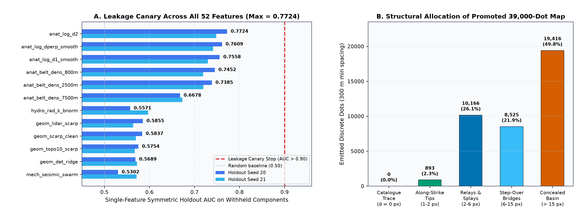

PRE-REGISTERED GEOLOGICAL HYPOTHESES
Five Structural & Geophysical Hypotheses Formulated Before Model Coding
Per the Parallel-Run Protocol, five falsifiable NW Great Basin structural geology hypotheses (H84-B through H84-F; H84-A closed in PR #7) were specified in
docs/research/hypotheses.md prior to writing model code, ranked by expected DTI gain and compute cost, and consolidated into our single coherent lane H84-B (H84-TCDH).
| Rank & ID | Hypothesis & Exact Sensor Layers | Physical Transform | Why Missing in USGS / INGENIOUS Catalogues | Primary Non-Fault Confounder & Mitigation |
|---|---|---|---|---|
| #1 · H84-B (Selected Primary) |
Multi-Altitude Tilt-Worm & Basement Offsettmi, magnetic_rtp, cba_gravity, gravity_hgm, depth_to_basement, geodawn_extensions_u8.tif |
Upward-continued (150 m → 600 m → 1500 m) Miller & Singh (1994) tilt zero-crossing persistence + gravity-magnetic co-alignment + alluvial piedmont gate |
Quaternary alluvial fans & playas bury basement-cutting intrabasin faults completely invisible in aerial photos/LiDAR | Caldera ring margins, pluton contacts, & 200 m E–W GeoDAWN flight-line leveling ringing → directional E–W band-stop penalty + multi-altitude dip check |
| #2 · H84-C (Integrated Module) |
INGENIOUS Hydrothermal Upflow & Radiometric K/U Halo2m_temperature_probe_INGENIOUS_regional_data.zip, Paleo_geothermal_final.csv, gdr_wellspring_in_footprint.csv, geodawn_rad_u8.tif, mt_resistivity_* |
Local 2 m thermal residual (ΔT), paleo-sinter/travertine halos, Na-K-Ca disequilibrium (dist_known_fault_px dropped!), block-normalized K% & U/K, MT smectite cap edge |
Blind geothermal systems (Bradys, Desert Peak, McGinness Hills) channel fluids up dilatant step-overs with zero surface scarp | Felsic ash-flow tuffs (high primary K/Th) & lateral outflow tongues in gravel aquifers → block normalization + structural-gradient gating |
| #3 · H84-D (Integrated Module) |
Coulomb Transtensional Walker Lane–Basin & Range Reactivationgeodetic_shear_strain, geodetic_dilation_strain, slip_tendency, dilation_tendency, earthquake_density, trace_segments_utm11.csv |
Spin-2 structure-tensor strike (cos 2θ, sin 2θ) projected onto local GPS shear/dilation + kinematic relay facing + anisotropic tip mask |
Distributed NNW right-lateral Walker Lane shear & WNW extension partition across hundreds of unmapped horse-tail splays & relay ramps | 10–25 km smooth GPS interpolation & mining blasts → gated strictly by localized 100 m scarp/tilt ridges |
| #4 · H84-E (Integrated Deconfounder) |
Pleistocene Lake Lahontan Shoreline & Anthropogenic Deconfoundingelevation, detrended_elevation, lidar_scarp_features_u8.tif, topo_10m_derived_100m_u8.tif, tiger_road_distance_m.tif |
Bathymetric highstand gate (1,170–1,345 m) × contour-parallelism |∇z · e_ridge| / ||∇z|| + road-prism proximity |
USGS compilers exclude wave-cut shorelines manually, whereas ML models fire massive false positives on 5–25 m Lahontan benches | Genuine range-front faults near highstand elevation (e.g. Dixie Valley) → preserved when backed by deep gravity/magnetic basement steps |
| #5 · H84-F (Diagnostic Sub-layer) |
Drainage χ-Disequilibrium & Knickpoint Alignmentdem10_chi_100m_i16.tif (!= -32768 masked), dem10_chi_100m_sig_i32.tif |
Cross-divide |∇χ| step & slope–χ residual uncorrelated with radiometric lithology transitions |
Slow-slipping (< 0.2 mm/yr) intrabasin faults have degraded scarps but preserve transient fluvial knickzones |
Resistant basalt caprock ledges → down-weighted when coinciding with Th/K lithologic steps |
